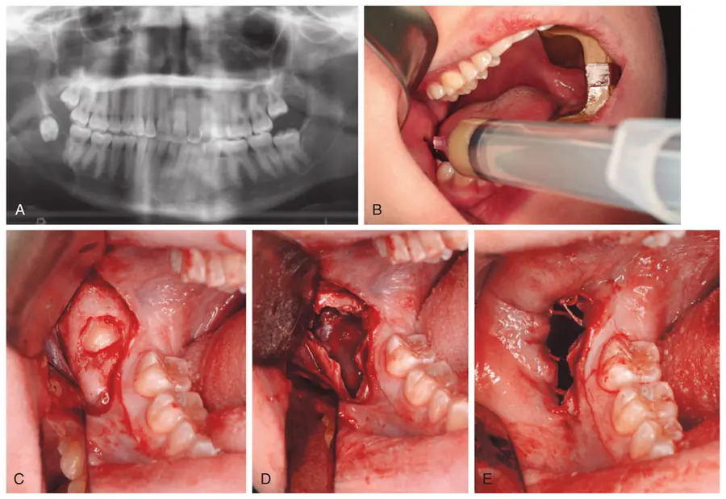
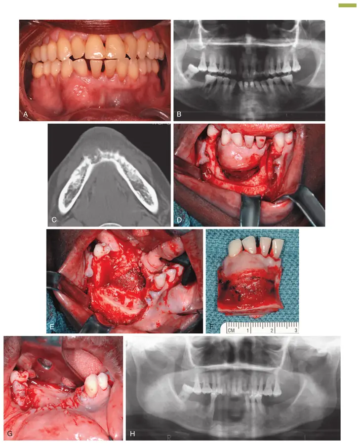

نسخه استخراجشده؛ ترجمه یا تأیید علمی انجام نشده است. وضعیت: captured
تعریف: انوکلئاسیون با کورتاژ یعنی پس از انوکلئاسیون، از یک کورت یا فرز برای برداشتن ۱ تا ۲ میلیمتر استخوان دور تا دور کل محیط حفرهی کیستیک استفاده شود — برای برداشتن هر سلول اپیتلیال باقیماندهای که ممکن است در محیط دیوارهی کیستیک یا حفرهی استخوانی باشد و بتواند به عود تکثیر یابد.

اندیکاسیون اول — کراتوسیست ادنتوژنیک. رفتار این ضایعه را میشود با اعداد توصیف کرد:
و سه دلیل این رفتار تهاجمی موضعی:
پس درمان حداقلی وقتی کراتوسیست ادنتوژنیک بالینی مشکوک است، انوکلئاسیون محتاطانه با کورتاژ تهاجمی حفرهی استخوانی است.
و اگر ضایعه عود کرد، درمان بر این عوامل استوار است:
و هر درمانی که باشد، یک الزام پیگیری هست: بیمار باید از نزدیک برای عود پیگیری شود، چون کراتوسیستهای ادنتوژنیک سالها پس از درمان عود کردهاند.
اندیکاسیون دوم — هر کیستی که پس از آنچه برداشت کامل تلقی شده بود، عود کند. دلایل کورتاژ در این حالت، همانهایی است که پیشتر آمد.
مزیت: اگر انوکلئاسیون باقیماندههای اپیتلیال بگذارد، کورتاژ میتواند آنها را بردارد و احتمال عود را کم کند.
و معایب — که همه دربارهی یک چیزند: تخریب: کورتاژ برای استخوان مجاور و بافتهای دیگر تخریبکنندهتر است. پالپهای دندانی ممکن است هنگام کورتاژ نزدیک نوک ریشه از خونرسانی عصبی-عروقیشان محروم شوند، و باندلهای عصبی-عروقی مجاور میتوانند به همین ترتیب آسیب ببینند. کورتاژ باید همیشه با نهایت دقت انجام شود تا از این خطرها پرهیز گردد.
سه روش اصلی برداشت جراحی تومورهای فک: (۱) انوکلئاسیون (با یا بدون کورتاژ)، (۲) رزکسیون مارجینال (سگمنتال) یا نسبی، و (۳) رزکسیون کامپوزیت.

و تعریف دقیق هرکدام:
و سه دستهی رفتاری: بسیاری از تومورهای خوشخیم غیرتهاجمی رفتار میکنند و بنابراین محافظهکارانه با انوکلئاسیون، کورتاژ، یا هر دو درمان میشوند، گروه دیگری از تومورهای خوشخیم دهانی تهاجمیتر رفتار میکنند و به حاشیهای از بافت درگیرنشده نیاز دارند تا شانس عود کم شود — که رزکسیون مارجینال یا نسبی برایشان به کار میرود، و گروه آخر انواع بدخیماند که به مداخلهی رادیکالتر با حاشیههای وسیعتر نیاز دارند.
و حالا هفت عاملی که پیش از جراحی باید ارزیابی شوند — و مهمترینشان اول:
و عامل هشتم که در واقع همان هدف دوم درس اول است — تلاشهای بازسازی: اعمال بازسازی باید پیش از جراحی اولیه برنامهریزی و پیشبینی شوند. و یک نکتهی ظریف دیگر: اغلب اهداف بازسازی، تکنیک جراحیای را دیکته میکنند که در برداشتن بیماری بهاندازهی تکنیک دیگری مؤثر است، ولی برای تسهیل تلاشهای بازسازی آینده بهینهتر است.